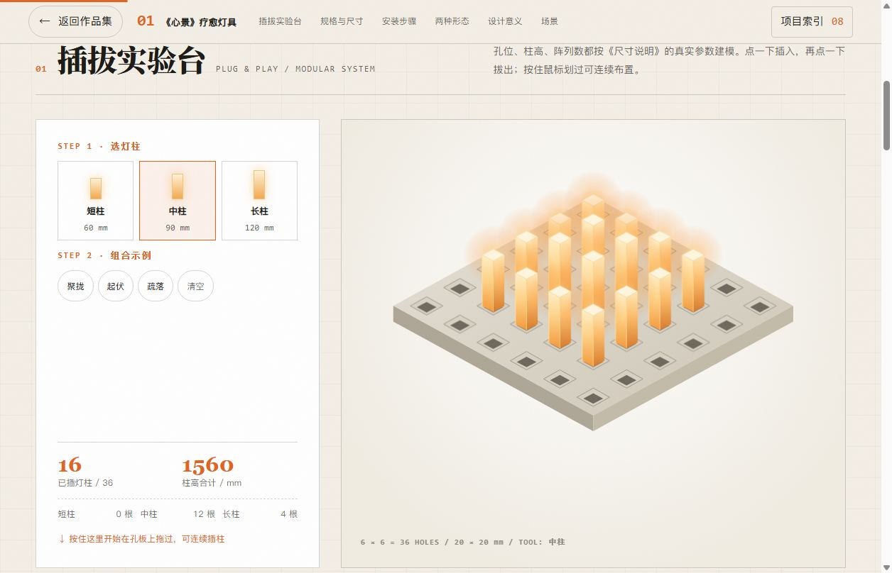
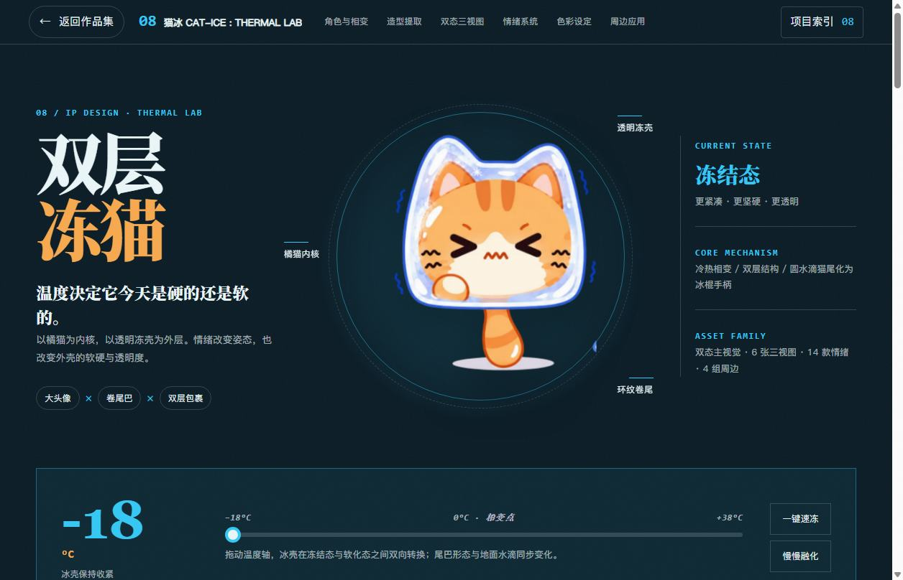
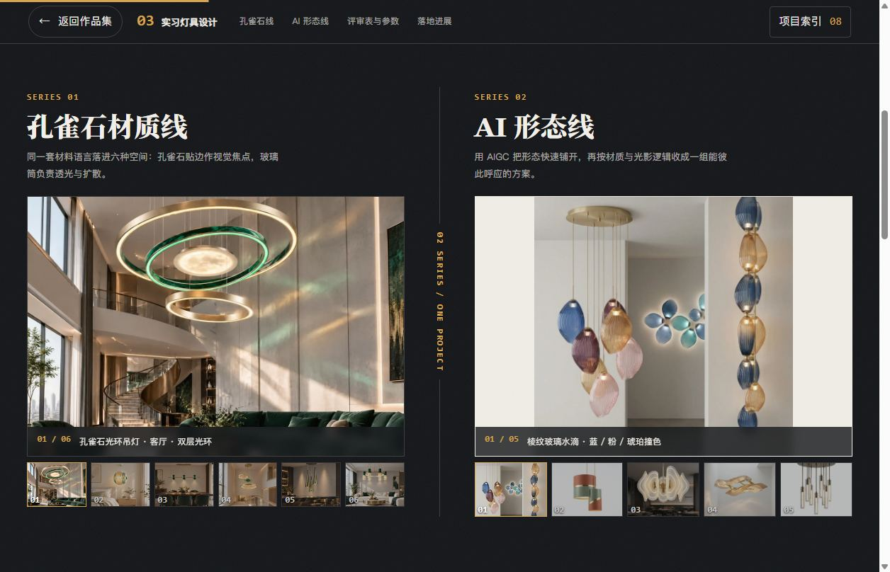
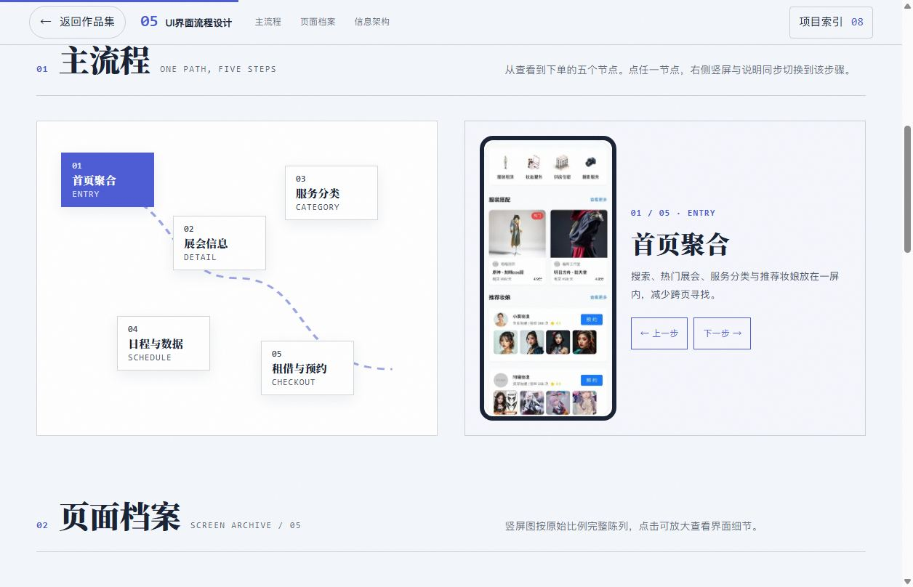
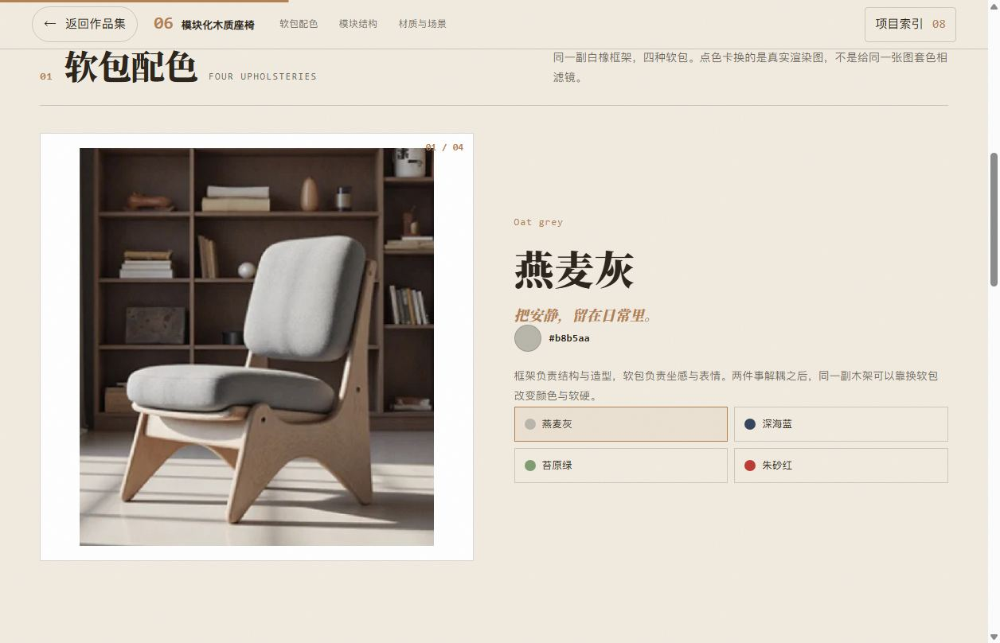

依据要求，先把 206 张素材逐张看过（15 张分组联系表 + 关键原图放大），确认每张图在对应项目里的实际用途、视觉主体、功能分区与版式层级，再按产品形态重做页面。八个页面没有共用段落模板：各自的分区顺序、专属装置、配色与栅格都不同。构建通过，桌面 1256×808 与手机 414×896/DPR2 共 16 场景逐项目实测。

| 身份 | 代表文件 | 在页面里的处理方式 |
|---|---|---|
| RGBA 透明底独立元素 | cat-ice/character/frozen.webp、melted.webp、views/* 6 张、emotions/01–14、merch/01–04、chair/chair-cutout.webp | 当作可自由排布的「角色 / 产品元素」，直接叠在展台、圆形局部放大、情绪网格上；不铺整张图 |
| 已排好版的整张展板 | project-lamp-1…7、lamp-gallery-1…6、project-ip-1…4、project-ui-1…3、project-aigc-*、project-ailamp-*、project-furniture-*、cat-ice/scheme1/*、aigc/aigc-board.webp | 拆出区域语义后用网页原生重排，只在页尾以小索引保留原板可放大，不作为主体 |
| 产品成品 / 场景照 | xinjing/user-01…05、lamps/01…06、lamps/ai/*、lamps/grad/*、chair/scene-*、snail/snail-6*、ui-cos-1…4 | 保持原始亮度与比例，按各页自己的叙事节奏排；竖屏 UI 一律 contain 不裁切 |
| 过程 / 图纸 / 证据 | xinjing/fig09–31、fig18 尺寸说明、qimu/*、diemu/*、snail/sketch-*、snail/mechanism.webp | 归入推导时间轴、规格标注、资料索引；线稿不冒充主视觉 |
已排好的区域逻辑（保留语义，不照抄版面）
封面《心景》 → 选题意义 → 方案设计 → 全套演示 → 单独演示 → 设计意义，另有《模块化设计》单页把内容切成 产品组成 / 安装步骤 / 灯柱类型 / 组合示例 四区；fig18 尺寸说明 分「灯柱尺寸」与「底座尺寸」两栏。structure.webp：坐垫模块 / 靠背模块 / 一体化实木框架（内侧面即导轨面）/ 插入方向，四个标注区。同类项目之间的布局关联：01 与 04 同属「光」，但 01 是工程制图台的插拔建模，04 是以手部动词为索引的展板；03 与 04 同属灯具，03 采用左右对开的双系列图录，04 采用 3/3 + 2/2/2 非等宽切分；05 与 07 都用网格，05 是带连线的流程路径，07 是可展开的六概念档案；02 与 06 都有「机构」，02 是横向进度轨道，06 是色卡换色 + 拆解手风琴。八个页面的 section 类名序列两两不同（实测 8/8）。
| 项目 | 分区顺序（自上而下） | 专属功能区域 / 装置 | 视觉系统 |
|---|---|---|---|
| 01 心景 | 首屏 → 插拔实验台 → 规格与尺寸 → 安装步骤 → 四项功能 → 两种形态 → 设计意义 → 场景序列 | 6×6 等距孔板，点按 / 拖过插入三档真实规格发光柱，实时统计已插数、柱高合计、柱型分布；三种组合预设 | 暖纸网格 + 展板橙 + 琥珀光，工程标本照 |
| 02 慢行者 | 首屏 → 进度轨道 → 四阶段 → 机构与三视图 → 草图时间轴 | 进度滑块联动屏幕数字条、蜗牛沿轨道位置与四阶段高亮；阶段卡可反跳进度 | 冷灰绿 + 仪表台，二重「屏幕 / 桌面」对照 |
| 03 实习灯具 | 全幅主视觉 → 左右对开图录 → 评审表与参数 → 落地进展 | 孔雀石线与 AI 形态线各一套独立主图 + 缩略条，互不干扰 | 墨黑 + 香槟金，中间一条竖分界 |
| 04 情绪疗愈灯具 | 首屏 → 七动作索引 + 主舞台 → 动作展板 → 材质与状态 | 七个手部动词切换真实成果图，主舞台含副图与上一盏 / 下一盏；3/3 + 2/2/2 非等宽展板 | 暖米纸 + 陶土橙 + 3px 硬边 |
| 05 UI 流程 | 首屏竖屏阶梯 → 服务路径 → 页面档案 → 信息架构 | SVG 连线串起五节点，点节点切换对应竖屏与说明；五张竖屏完整陈列 | 冷白 + 靛蓝，手机屏 contain 不裁切 |
| 06 模块化座椅 | 透明底单品首屏 → 软包配色台 → 模块结构 → 材质与场景 | 四色卡切换真实渲染图与采样色值；三条拆解手风琴；结构图可放大 | 奶油 + 焦糖宋体杂志式 |
| 07 概念设计 | 六图拼贴首屏 → 六概念网格 → 在地文化 → 五步流程 | 概念卡展开 lead / 说明 / 规格；五步手风琴带百分比条 | 墨黑网格底 + 橙，产品图保持原亮度 |
| 08 猫冰 | 角色圆形展台 → 温度控制台 → 机制四条 → 造型提取 → 双态三视图 → 情绪系统 → 色彩设定 → 周边应用 → 原板索引 | −18°C→+38°C 温度轴驱动双态真实角色切换；三视图 tab、14 情绪跨格网格、5 色票、6 类周边 | 深蓝夜 + 极光蓝 + 杏橘，IP 官网感 |

心景 · 围绕「插拔」：不是把图调暗，而是按 fig18 的真实参数（短 60 / 中 90 / 长 120 mm、截面 20×20 mm、底座 200×200×45 mm、6×6 共 36 孔、孔径 20×20 mm、亚克力）用 SVG 建了一个等距孔板。柱体有顶面 / 左右侧面渐变、顶部径向光晕，插入与拔出都有状态变化。原展板四区被翻译成网页区域：产品组成＝孔板与柱型，安装步骤＝取柱 / 插入 / 发光三图，灯柱类型＝三种柱高工具，组合示例＝聚拢 / 起伏 / 疏落三预设。首屏主视觉用 fig30 成品照保持原有暖光，不做任何全局压暗。
猫冰 · 以核心 IP 元素为页面重点：hero.webp（网页截图）与三张 scheme1 整版展板都退到「资料索引」的小卡。首屏主角是 RGBA 透明底的冻结态 / 软化态角色，置于圆形展台，配三处引线标注；切换状态用两套真实角色图互斥，不用亮度滤镜。设定稿的三栏语义拆成页面里的造型提取（角色局部放大圆）、双态三视图、情绪系统（14 款）、色彩设定（5 个色值从展板色票逐点采样：杏橘 #FEC37F / 蜜橙 #ED965F / 奶白 #FFF0DE / 雾紫 #8D8CAF / 深棕 #5B3C3E）、周边应用（6 类）。表情名称前 8 条按原展板转录，其余按素材编号稳妥标注，不臆测情绪。

用户允许 AI 生图或用 Blender 补缺。逐张核查后的结论是八个项目的核心视觉素材并不缺：心景有成品、孔板、尺寸图、场景与打样过程；猫冰有完整透明底角色资产（双态、6 张三视图、14 表情、4 组周边）；其余六项各有成品图、线稿与已排版展板。若生成新的产品图，反而会引入与实物不符的形态，与「贴合素材用途和产品设计意图、不臆测」相冲突。
因此「必要的建模」改以网页内建模完成：01 的 6×6 等距孔板与三档发光柱用 SVG 参数化绘制（可按真实毫米规格插拔），05 的服务路径用 SVG 连线，08 的圆形展台与局部放大用 CSS。不新增任何冒充产品的生成图，也不改动原始素材文件。
| 指标 | 结果 |
|---|---|
| 构建 | vite build 通过 |
| 场景 | 桌面 8 + 手机 8 = 16/16 全部渲染成功 |
| 结构差异 | 8 页 section 序列 8/8 互不相同 |
| 坏图 | 每页 8–28 张图，0 坏图（全部改 eager 后统计） |
| 横向溢出 | scrollWidth = clientWidth，桌面 / 手机均 0 |
| 触控与字阶 | <44px 控件 0；<12px 文本节点 0 |
| 运行时异常 | 0 |
| 交互实测 | 01 插拔 16→17 根且切到长柱、02 进度 80% 同步、03 右侧换「音浪波浪灯」、04 切「负空间圆环灯」、05 切「日程与数据」、06 换「苔原绿」、07 展开 3 条规格、08 −18→+38 切软化态，全部通过 |
| 四条指定口径 | 逐页保留；全站「功能均可实现」每页仅 1 处 |
| 动效降级 | prefers-reduced-motion 下项目页内动画数 0，内容全部可见（首页原有滚动提示在详情页之外，不属本次改造） |
| 单页可见中文 | 810–1379 字，信息密度高于上一版且未回到文字堆砌 |

src/components/projectPages/：index.jsx（分发 + 共享外壳）、shared.jsx、meta.js、8 个 Pxx*.jsx 独立页面、projectPages.css / pages.css / pages-b.css（三套样式层）。src/App.jsx：详情分发从单一 ProjectShowcase 换成 ProjectPages，沿用 key={id} 与深链 #p=xx；旧的 ProjectShowcase / ProjectDossier 文件保留不挂载，便于回退对比。8页重构证据/ 12 张截图、本文件与同名 HTML。原始指标在 .workbuddy/tmp/evidence-pages/metrics.json，验证脚本 cdp-pages.mjs / cdp-sections.mjs。fig18 数值直接用于建模，未重新计算。项目展示板块-改版.html 与两个 作品集-AI评审包*.zip 是更早版本的快照，与本轮八个页面无关；若要给 Gemini 重新评分，需按当前新版重做静态包。